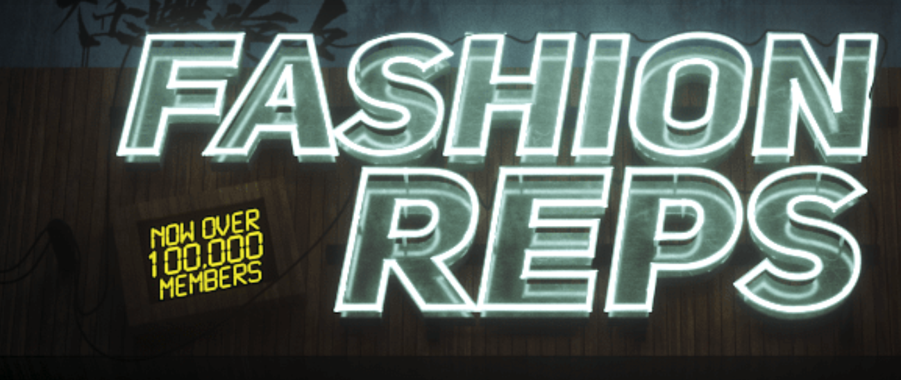

Want to buy something from Taobao but it looks too damn complicated?
Use an proxy service (aka agent) like Superbuy.com. I only have experience with Superbuy so i'll be talking about them, but there are a few alternatives out there. Superbuy is quite newbie friendly so I like them.
First, you gotto create an account with superbuy and load some money on it (you can use credit card, paypal, and etc...).
Second, simply copy and paste your taobao link into the URL BOX on superbuy website, and add your taobao item into your superbuy cart. Superbuy (the agent) will make the purchases for you and have the items shipped to your mailbox at superbuy's warehouse. You can decide when you want to ship those items from your superbuy warehouse to your HOUSE. The cool thing about using an agent is they actually inspect the purchased items and take some photos so you can see them. You can request them to take certain measurements just to make sure the items would fit you, or request close up photo of embroidery or w/e. There are a few in depth guide on how to use superbuy on youtube if you want the step by step w/ visual.
What is yupoo and how to buy from yupoo sellers?
yupoo is like a photo album of the products (product catalog). But unlike instagram, you cannot contact the sellers directly on yupoo. Most yupoo sellers have their contact info under "CONTACTS" tab, and majority of them like to use WeChat/Whatsapp/Skype (wechat is the most popular among these Chinese sellers). Always a good idea to search for review of the yupoo sellers that you're not familiar with, as most of them require payment methods like western union, which has ZERO buyer protection.
r/FashionReps Jargon
- 1:1 succ = 1:1 success = 1:1 SUCK (depends on the context, 1:1 succ can mean two different things)
- 1:1 = exact, flawless replica (this is the goal for every REP, but no rep is truly a perfect 1:1)
- 0.9:1 = close to perfect (usually these are considered high end reps, extremely hard to call out)
- GP = Guinea Pig (buying a new rep that hasn't been reviewed or buying from a new seller, for the purpose of review)
- WTC = W2C = Where to Cop (when making a QC post, make sure you provide a W2C link)
- QC = quality control = quality check (QC's are highly recommended when buying high end reps even when buying from trusted seller. )
- LC = legit check (authenticity check)
- GL = green light (this is when a rep passes QC)
- RL = red light (does not pass QC)
- B&S = bait & switch (seller intentionally show you photos of a good rep, then send you a shitty rep)
- TTS = True To Size (this is about sizing, quite self explanatory)
- OOS = Out of Stock
- BOGO = Supreme Box Logo (the most commonly discussed items)
- ASSC = anti social social club